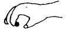

Kuesioner Praskrining untuk Anak 21 bulan
- Tanpa berpegangan atau menyentuh lantai, apakah anak dapat membungkuk untuk memungut mainan di lantai dan kemudian berdiri kembali?
- Apakah anak dapat menunjukkan apa yang diinginkannya tanpa menangis atau merengek? Jawab YA bila ia menunjuk, menarik atau mengeluarkan suara yang menyenangkan.
- Apakah anak dapat berjalan di sepanjang ruangan tanpa jatuh atau terhuyung-huyung?
- Apakah anak dapat mengambil benda kecil seperti kacang, kismis, atau potongan biskuit dengan menggunakan ibu jari clan jari telunjuk seperti pada gambar?

- Jika anda menggelindingkan bola ke anak, apakah ia menggelindingkan/melemparkan kembali bola pada anda?
- Apakah anak dapat memegang sendiri cangkir/gelas clan minum dari tempat tersebut tanpa tumpah?
- Jika anda sedang melakukan pekerjaan rumah tangga, apakah anak meniru apa yang anda lakukan?
- Apakah anak dapat meletakkan satu kubus di atas Gerak halus Ya Tida kubus yang lain tanpa menjatuhkan kubus itu? Kubus yang digunakan ukuran 2.5-5.0 cm
- Apakah anak dapat mengucapkan paling sedikit 3 kata yang mempunyai arti selain “papa” dan “mama”?.
- Apakah anak dapat berjalan mundur 5 langkah atau lebih tanpa kehilangan keseimbangan? (Anda mungkin dapat melihatnya ketika anak menarik mainannya)